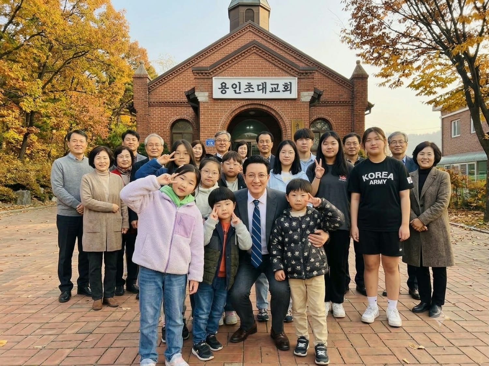
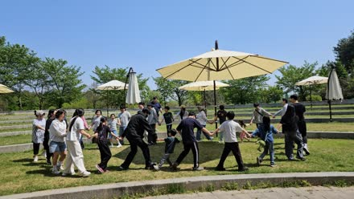
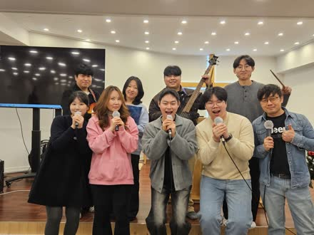
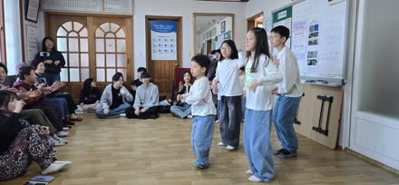
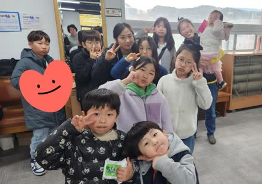
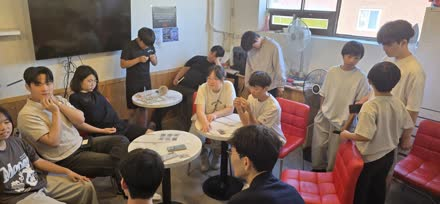
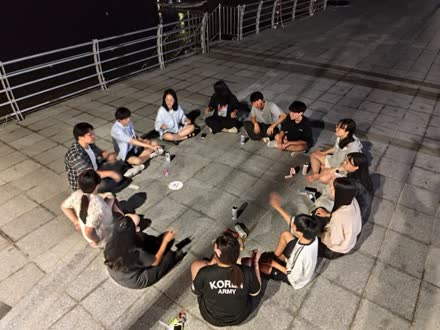

당신을 초대합니다
대한예수교장로회 용인초대교회
봉투를 눌러 열어 보세요
반갑습니다.
예수님의 이름으로 축복합니다.
저희 교회는 오직 주님께 영광,
주님으로 말미암아
기뻐하고자 하는 교회입니다.
이웃이나 인근 교회와의 협력과 교제로 따뜻하게 섬기며, 한 사람 한 사람을 존귀한 하나님의 자녀로 세워가는 일에 최선을 다하고 있습니다.
급변하는 세상 속에서도 변치 않는 복음의 가치를 붙들고, 아픈 곳을 보듬으며, 미래의 세대에게 성경 속 믿음의 지도자들처럼 고난이나 역경을 이겨내는 미래의 리더를 만들려고 노력하며 교육하고 기도합니다.
초대교회의 이름처럼
모든 학생들과 청년을 초대합니다.
주의 이름으로 환영하며 축복합니다 ♡
| 주일 낮 예배 | 주일 오전 11:00 |
|---|---|
| 주일 찬양 예배 | 주일 오후 1:30 |
| 주일학교 예배 | 주일 오전 10:00 |
| 중고등부 예배 | 주일 오전 11:00 |
| 수요 예배 | 수요일 오후 8:00 |
| 금요 기도회 | 금요일 오후 9:00 |
| 새벽 기도회 | 매일 오전 6:00 |
처음 오신 분은 1층 입구에서 안내해 드립니다.
사진을 누르면 크게 볼 수 있고,
좌우로 넘기면 모든 사진을 보실 수 있습니다






예배 시간, 오시는 길, 무엇이든 편하게 연락 주세요.